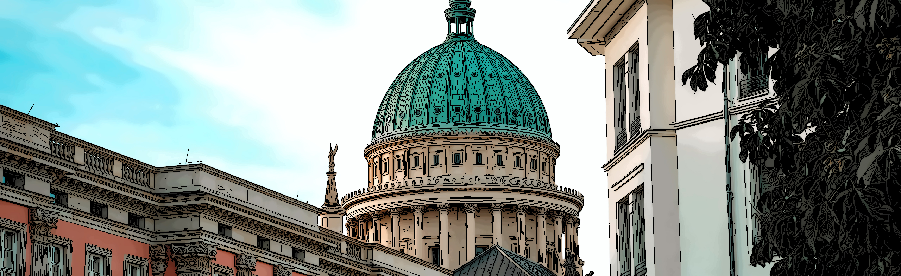

The 14th International Symposium on Visual Information Communication and Interaction (VINCI 2021)
Potsdam, Germany, 6–7 September 2021
The 14th International Symposium on Visual Information Communication and Interaction (VINCI 2021)
Potsdam, Germany, 6–7 September 2021
The 14th International Symposium on Visual Information Communication and Interaction (VINCI 2021)
Potsdam, Germany, 6–7 September 2021
All presentations will take place virtually, using the event system Hopin (visit the event). All times are given in CEST.
Time | Monday / September 6, 2021 / Day One |
|---|---|
| 08:15 | Registration Opens / Conference Start |
| 09:00 | Opening of VINCI |
| 09:30 | Keynote Talk 1Daniel Limberger |
| Visualizing the Black Box of Machine Learning: Challenges and Opportunities KN Alex Telea, Department of Information and Computing Sciences, Utrecht University | |
| 10:30 | Coffee Break |
| 11:00 | Session 1: Multivariate Data and ScatterplotsGünter Wallner |
| |
| 12:15 | Lunch Break |
| 13:45 | Session 2: Interaction and HCITakayuki Itoh |
| |
| 15:00 | Coffee Break |
| 15:30 | Session 3: Comics, Narratives, and EvaluationMichael Burch |
| |
| 16:45 | After Conference Discussions / Virtual Reception Drink |
Time | Tuesday / September 7, 2021 / Day Two |
|---|---|
| 08:15 | Keynote Talk 2Matthias Trapp |
| Problem-Driven Visualization Through Design Studies KN Tamara Munzner, Department of Computer Science, University of British Columbia | |
| 09:15 | Short Break |
| 09:30 | Session 4: Immersive AnalyticsKarsten Klein |
| |
| 10:30 | Coffee Break |
| 11:00 | Session 5: Applications IDaniel Limberger |
| |
| 12:15 | Lunch Break |
| 13:45 | Session 6: PostersMichael Burch |
| |
| 15:00 | Coffee Break |
| 15:30 | Session 7: Applications IIWilly Scheibel |
| |
| 16:45 | Short Break |
| 17:00 | Closing, Best Paper Awards and VINCI 2022 |
| 17:30 | After Conference Discussions |
The following presentation times apply to the different paper types:
| Presentation Time | Questions | |
|---|---|---|
| FP / Full Paper | 25 Minutes | 5 Minutes |
| SP / Short Paper | 12 Minutes | 3 Minutes |
| PP / Poster Paper | 10 Minutes | 5 Minutes |
| KN / Keynote | 45 Minutes | 15 Minutes |